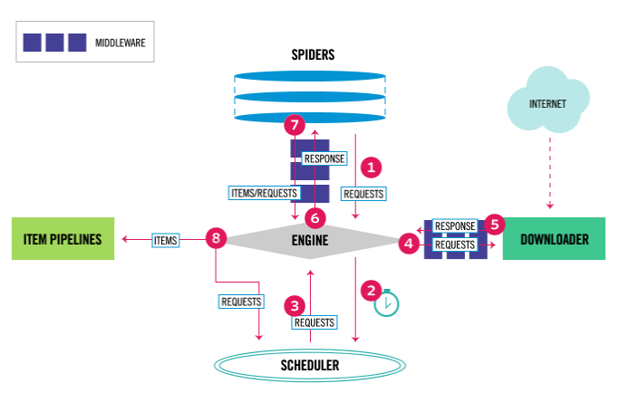

Scrapy¶
Scrapy 是一个基于 Twisted 的异步处理框架, 是纯 Python 实现的爬虫框架
其架构清晰, 模块之间的耦合程度低, 可扩展性极强, 可以灵活完成各种需求
只需要定制开发几个模块就可以轻松实现一个爬虫
Intro¶
架构¶

Engine: 引擎, 用来处理整个系统的数据流处理, 触发事务, 是整个框架的核心
Item: 项目, 它定义了爬取结果的数据结构, 爬取的数据会被赋值成该对象
Scheduler: 调度器, 用来接受引擎发过来的请求并加入队列中, 并在引擎再次请求的时候提供给引擎
Downloader: 下载器, 用于下载网页内容, 并将网页内容返回给蜘蛛
Spiders: 蜘蛛, 其内定义了爬取的逻辑和网页的解析规则, 它主要负责解析响应并生成提取结果和新的请求
Item Pipeline: 项目管道, 负责处理由蜘蛛从网页中抽取的项目, 它的主要任务是清洗, 验证和存储数据
Downloader Middlewares: 下载器中间件, 位于引擎和下载器之间的钩子框架, 主要是处理引擎与下载器之间的请求及响应
Spider Middlewares: 蜘蛛中间件, 位于引擎和蜘蛛之间的钩子框架, 主要工作是处理蜘蛛输入的响应和输出的结果及新的请求
数据流¶
Scrapy 中的数据流由引擎控制, 其过程如下:
Engine 首先打开一个网站, 找到处理该网站的 Spider 并向该 Spider 请求第一个要爬取的 URL
Engine 从 Spider 中获取到第一个要爬取的 URL 并通过 Scheduler 以 Request 的形式调度
Engine 向 Scheduler 请求下一个要爬取的 URL
Scheduler 返回下一个要爬取的 URL 给 Engine, Engine 将 URL 通过 Downloader Middlewares 转发给 Downloader 下载
一旦页面下载完毕, Downloader 生成一个该页面的 Response, 并将其通过 Downloader Middlewares 发送给 Engine
Engine 从下载器中接收到 Response 并通过 Spider Middlewares 发送给 Spider 处理
Spider 处理 Response 并返回爬取到的 Item 及新的 Request 给 Engine
Engine 将 Spider 返回的 Item 给 Item Pipeline, 将新的 Request 给 Scheduler
重复第二步到最后一步, 直到 Scheduler 中没有更多的 Request, Engine 关闭该网站, 爬取结束
通过多个组件的相互协作, 不同组件完成工作的不同, 组件对异步处理的支持, Scrapy 最大限度地利用了网络带宽, 大大提高了数据爬取和处理的效率
项目结构¶
Scrapy 通过命令行来创建项目, 项目创建之后文件结构如下:
scrapy.cfg
project/
__init__.py
items.py
pipelines.py
settings.py
middlewares.py
spiders/
__init__.py
spider1.py
spider2.py
...
scrapy.cfg: Scrapy 项目的配置文件, 其内定义了项目的配置文件路径, 部署相关信息等内容
items.py: 定义 Item 数据结构, 所有的 Item 的定义都可以放这里
pipelines.py: 定义 Item Pipeline 的实现, 所有的 Item Pipeline 的实现都可以放这里
settings.py: 定义项目的全局配置
middlewares.py: 定义 Spider Middlewares 和 Downloader Middlewares 的实现
spiders: 其内包含一个个 Spider 的实现, 每个 Spider 都有一个文件
Scrapy 使用¶
创建项目¶
$ scrapy startproject projectname
生成项目文件夹
scrapy.cfg # Scrapy 部署时的配置文件
projectname # 项目的模块, 引入的时候需要从这里引入
__init__.py
items.py # Items 的定义, 定义爬取的数据结构
middlewares.py # Middlewares 的定义, 定义爬取时的中间件
pipelines.py # Pipelines 的定义, 定义数据管道
settings.py # 配置文件
spiders # 放置 Spiders 的文件夹
__init__.py
创建 spider¶
子类化 scrapy.Spider, 定义 Spider 的名称和起始请求, 以及处理爬取结果的方法
或者在命令行创建:
$ scrapy genspider spider1
以上命令会在 spiders 文件夹中创建 spider1.py:
# spider1.py
import scrapy
class Spider1Spider(scrapy.Spider):
name = "spider1"
allowed_domains = ["spider1.toscrape.com"]
start_urls = ['http://spider1.toscrape.com/']
def parse(self, response):
pass
name: 每个项目唯一的名字, 用来区分不同的 Spider
allowed_domains: 允许爬取的域名, 如果初始或后续的请求链接不是这个域名下的, 则请求链接会被过滤掉
start_urls: 包含了 Spider 在启动时爬取的 url 列表, 初始请求是由它来定义的
parse(response): Spider 的一个方法; 默认情况下, 被调用时 start_urls 里面的链接构成的请求完成下载执行后, 返回的响应就会作为唯一的参数传递给这个函数; 该方法负责解析返回的响应, 提取数据或者进一步生成要处理的请求
创建 Item¶
子类化 scrapy.Item, 定义类型为 scrapy.Field 的字段来创建保存爬取数据的容器; 和字典类似
import scrapy
class Spider1Item(scrapy.Item):
text = scrapy.Field()
author = scrapy.Field()
tags = scrapy.Field()
# ...
在 parse() 中解析 Response¶
在 parse() 中实例化自定义 Item 类¶
在 parse() 中创建下一个请求¶
实例化 scrapy.Request(url, callback) 并 yield
url: 请求链接
callback: 回调函数; 当指定了该回调函数的请求完成之后, 获取到响应, 引擎会将该响应作为参数传递给这个回调函数; 回调函数进行解析或生成下一个请求
在命令行运行定义的 spider¶
$ scrapy crawl spider1
保存抓取结果到文件¶
$ scrapy crawl quotes -o results.json
支持 json, jsonline, csv, xml, pickle, marshal 等格式, 还支持 ftp, s3 等远程输出, 也可自定义 ItemExporter 来实现其他输出
使用 Item Pipeline 进行更复杂的操作¶
定义实现了 process_item(item, spider) 方法的类即可; 启用 Item Pipeline 后, Item Pipeline 会自动调用这个方法; process_item() 方法必须返回包含数据的字典或 Item 对象, 或者抛出 DropItem 异常
其他可定义的方法:
from_crawler(cls, crawler): @classmethod, 通过 crawler 可以获取 settings.py 中的设置, 如数据库连接地址和名称等
open_spider(self, spider): 当 Spider 被开启时调用, 主要进行一些初始化操作
close_spider(self, spider): 当 Spider 被关闭时调用, 进行清理工作
能够实现如
清洗 HTML 数据
验证爬取数据, 检查爬取字段
查重并丢弃重复内容
将爬取结果储存到数据库
等操作
Selector¶
基于 lxml, 支持 XPath 选择器, CSS 选择器以及正则表达式
from scrapy import Selector
selector 对象可以使用 xpath() 或 css() 获取元素
创建 selector¶
response 对象的 selector 属性是一个 Selector 的实例
response.selector.xpath('//span/text()').get()
也可以通过传入 HTML 或 response 实例化 Selector
from scrapy.selector import Selector body = '<html><body><span>good</span></body></html>' Selector(text=body).xpath('//span/text()').get()
response.selector.xpath() 或 response.selector.css() 可简写为 response.xpath() 或 response.css()
Selector¶
- scrapy.selector.Selector(response=None, text=None, type=None, root=None, **kwargs)
Selector 的实例是 response 的一个 wrapper, 用于选择其内容的一部分
- PARAM:
response: HtmlResponse 或 XmlResponse 对象
text: unicode 字符串或 utf-8 编码的文本; 不能与 response 一起使用
- type: selector 类型; 可以是”html”, “xml” 或 None (default)
type 为 None 时, 传入 text 则默认为 “html”; 传入 response 则根据 response 类型决定
HtmlResponse -> “html”
XmlResponse -> “xml”
其他 -> “html”
当 type 被设置时, 指定的类型会被强制使用
- xpath(query, namespaces=None, **kwargs)
寻找符合 xpath query 的 nodes 并返回含有所有元素的 SelectorList 实例
query: 包含 XPATH query 的字符串
namespaces: 可选的 prefix: namespace-uri
- css(query)
寻找符合 CSS query 的 nodes 并返回含有所有元素的 SelectorList 实例
query: 包含 CSS query 的字符串
CSS queries 会被转换成 XPath queries (使用 cssselect 库) 并调用 .xpath() 方法
- get()
序列化并返回匹配的 nodes 为 unicode 字符串; 百分号编码 (Percent encoded) 的内容会被解码
- attrib
返回元素的属性字典
- re(regex, replace_entities=True)
返回匹配正则表达式的 unicode 字符串的列表
regex: 已编译的正则表达式或能够被 re.compile(regex) 编译的字符串
默认情况下, 除了 & 和 < 以外的字符实体引用会被替换为对应的字符; 设置 replace_entities=False 可以关闭替换
- re_first(regex, default=None, replace_entities=True)
返回匹配正则表达式的 unicode 字符串的而列表的第一个字符串; 如果没有匹配则返回默认值
默认情况下, 除了 & 和 < 以外的字符实体引用会被替换为对应的字符; 设置 replace_entities=False 可以关闭替换
- register_namespace(prefix, uri)
Register the given namespace to be used in this Selector. Without registering namespaces you can’t select or extract data from non-standard namespaces
- remove_namespaces()
Remove all namespaces, allowing to traverse the document using namespace-less xpaths
- __bool__()
Return True if there is any real content selected or False otherwise. In other words, the boolean value of a Selector is given by the contents it selects.
- getall()
返回只含有 get() 的返回值的列表
使用 selector 获取结果¶
xpath() 和 css() 返回 SelectorList 实例, 它是由新的 selectors 组成的列表
SelectorList¶
- scrapy.selector.SelectorList
内置 list 类的子类
- xpath(xpath, namespaces=None, **kwargs)
调用列表中每个元素的 .xpath() 方法并返回结果为新的 SelectorList
xpath: 包含 XPATH query 的字符串
namespaces: 可选的 prefix: namespace-uri
- css(query)
调用列表中每个元素的 .css() 方法并返回结果为新的 SelectorList
query: 包含 CSS query 的字符串
- getall()
调用列表中每个元素的 .css() 方法并返回结果为 unicode 字符串的列表
- get(default=None)
返回列表中第一个元素的 .get() 方法的结果
若列表为空则返回默认值
- re(regex, replace_entities=True)
调用列表中每个元素的 .re() 方法并返回结果为 unicode 字符串的列表
默认情况下, 除了 & 和 < 以外的字符实体引用会被替换为对应的字符; 设置 replace_entities=False 可以关闭替换
- re_first(regex, default=None, replace_entities=True)
返回列表中第一个元素的 .re() 方法的结果
若列表为空或没有匹配则返回默认值
默认情况下, 除了 & 和 < 以外的字符实体引用会被替换为对应的字符; 设置 replace_entities=False 可以关闭替换
- attrib
返回列表中第一个元素的属性字典
若列表为空或没有匹配则返回空字典
Spider¶
定义爬取网站的动作
分析爬取下来的网页
Spider 的工作流程:
以初始的 URL 初始化 Request, 并设置回调函数; 当该 Request 成功请求并返回时, 将生成 Response, 并作为参数传给该回调函数
在回调函数内分析返回的网页内容; 回调函数的返回值为包含数据的 dicts, Item 对象, Request 对象, 或包含了这些对象的可迭代对象; 如果返回的是 Reqeust, 那么 Request 执行成功得到 Response 之后会再次传递给 Request 中定义的回调函数, 可以再次使用选择器来分析新得到的网页
在回调函数中解析网页内容并用解析的数据生成 items
最后如果返回的是字典或 Item 对象, 可通过 Feed Exports 等形式存入到文件, 如果设置了 Pipeline 的话, 可以经由 Pipeline 处理 (如过滤, 修正等) 并保存
- scrapy.spiders.Spider
这个类是最简单最基本的 Spider 类, 每个其他的 Spider 必须继承这个类
这个类里提供了 start_requests() 方法的默认实现, 读取并请求 start_urls 属性, 并根据返回的结果调用 parse() 方法解析结果
- name
爬虫名称, 定义 Spider 名字的字符串; Spider 的名字定义了 Scrapy 如何定位并初始化 Spider, 所以其必须是唯一的
name 是 Spider 最重要的属性, 而且是必须的
如果该 Spider 爬取单个网站, 通常以该网站的域名名称来命名 Spider
- allowed_domains
允许爬取的域名列表, 可选; 不在此范围的链接不会被跟进爬取
- start_urls
起始 URL 列表, 当没有实现 start_requests() 方法时, 默认会从这个列表开始抓取
随后的 Request 会由 start_urls 中的 data 生成
- custom_settings
这是一个字典, 是专属于本 Spider 的配置, 此设置会覆盖项目全局的设置; 且此设置必须在初始化前被更新, 所以它必须定义成类变量
- crawler
此属性在类初始化后由 from_crawler() 方法设置, 代表的是本 Spider 类对应的 Crawler 对象; Crawler 对象中包含了很多项目组件, 利用它可以获取项目的一些配置信息, 如最常见的就是获取项目的设置信息, 即 Settings
- settings
Settings 对象, 可以直接获取项目的全局设置变量
- logger
用 Spider 名创建的 logger
- from_crawler(crawler, *args, **kwargs)
Scrapy 用于创建 spiders 的类方法
You probably won’t need to override this directly because the default implementation acts as a proxy to the __init__() method, calling it with the given arguments args and named arguments kwargs.
Nonetheless, this method sets the crawler and settings attributes in the new instance so they can be accessed later inside the spider’s code.
crawler (Crawler instance): crawler to which the spider will be bound
- start_requests()
用于生成初始请求, 必须返回一个可迭代对象, 当开始爬取时由 Scrapy 调用, 且只被调用一次; 默认使用 start_urls 里面的 URL 来构造 GET 请求的 Request(url, dont_filter=True); 如果要在启动时以改变访问方式, 可以重写这个方法
- parse(response)
当 requests 没有指定回调函数时, 该方法会默认被调用, 它负责处理 Response, 处理返回结果, 并从中提取出想要的数据和下一步的请求, 然后返回; 该方法需要返回一个包含 Request 或 Item 的可迭代对象
- log(message[, level, component])
发送 log 信息到 Spider 的 logger
- closed(reason)
当 Spider 关闭时, 该方法会被调用, 在这里一般会定义释放资源的一些操作或其他收尾操作
通用 Spiders¶
将各个站点的 Spider 的公共部分保留下来, 不同的部分提取出来作为单独的配置, 则在新增一个爬虫的时候, 只需要实现这些网站的爬取规则和提取规则即可
CrawlSpider¶
CrawlSpider 是 Scrapy 提供的一个通用 Spider; 在 Spider 里可以指定一些爬取规则来实现页面的提取, 这些爬取规则由一个专门的数据结构 Rule 表示
Rule 里包含提取和跟进页面的配置, Spider 会根据 Rule 来确定当前页面中的哪些链接需要继续爬取, 哪些页面的爬取结果需要用哪个方法解析等
CrawlSpider 继承自 Spider 类, 除了 Spider 类的所有方法和属性外, 它还提供了另外的属性和方法:
rules: 爬取规则属性, 是包含一个或多个 Rule 对象的列表, 每个 Rule 对爬取网站的动作都做了定义; CrawlSpider 会读取 rules 的每一个 Rule 并进行解析
parse_start_url(): 一个可重写的方法; 当 start_urls 里对应的 Request 得到 Response 时, 该方法被调用; 它会分析 Response 并必须返回 Item 对象或者 Request 对象
Rule¶
- scrapy.contrib.spiders.Rule(link_extractor, callback=None, cb_kwargs=None, follow=None, process_links=None, process_request=None)
link_extractor: 一个 Link Extractor 对象, 通过它, Spider 可以知道从爬取的页面中提取哪些链接, 提取出的链接会自动生成 Request; 它又是一个数据结构, 一般常用 LxmlLinkExtractor 对象作为参数
callback: 即回调函数, 每次从 link_extractor 中获取到链接时, 该函数将会调用; 该回调函数接收一个 response 作为其第一个参数, 并返回一个包含 Item 或 Request 对象的列表; 注意, 避免使用 parse() 作为回调函数。由于 CrawlSpider 使用 parse() 方法来实现其逻辑, 如果 parse() 方法覆盖了, CrawlSpider 将会运行失败
cb_kwargs: 字典, 包含传递给 callback 的参数
follow: 布尔值, True 或 False; 指定根据该规则从 response 提取的链接是否需要跟进; 如果 callback 参数为 None, follow 默认设置为 True, 否则默认为 False
process_links: 指定链接处理函数, 从 link_extractor 中获取到链接列表时, 该函数将会调用, 它主要用于过滤
process_request: 指定 Request 处理函数, 根据该 Rule 提取到每个 Request 时, 该函数都会调用, 对 Request 进行处理; 该函数必须返回 Request 或者 None
LinkExtractor¶
- scrapy.linkextractors.lxmlhtml.LxmlLinkExtractor(allow=(), deny=(), allow_domains=(), deny_domains=(), deny_extensions=None, restrict_xpaths=(), restrict_css=(), tags=(‘a’, ‘area’), attrs=(‘href’,), canonicalize=False, unique=True, process_value=None, strip=True)
allow: 一个正则表达式或正则表达式列表, 它定义了从当前页面提取出的链接哪些是符合要求的, 只有符合要求的链接才会被跟进
deny: 与 allow 相反
allow_domains: 定义了符合要求的域名, 只有此域名的链接才会被跟进生成新的 Request, 它相当于域名白名单
deny_domains: 与 allow_domains 相反, 相当于域名黑名单
restrict_xpaths: 定义了从当前页面中 XPath 匹配的区域提取链接, 其值是 XPath 表达式或 XPath 表达式列表
restrict_css: 定义了从当前页面中 CSS 选择器匹配的区域提取链接, 其值是 CSS 选择器或 CSS 选择器列表
其他参数代表了提取链接的标签, 是否去重, 链接的处理等内容, 使用的频率不高
Item Loader¶
Rule 并没有对 Item 的提取方式做规则定义; 这需要 Item Loader 来实现
Item 提供的是保存抓取数据的容器, 而 Item Loader 提供的是填充容器的机制
- scrapy.loader.ItemLoader([item, selector, response,] **kwargs)
返回一个新的 Item Loader 来填充给定的 Item; 如果没有给出 Item, 则使用 default_item_class 中的类自动实例化
item: Item 对象, 可以调用 add_xpath(), add_css() 或 add_value() 等方法来填充 Item 对象
selector: Selector 对象, 用来提取填充数据的选择器
response: Response 对象, 用于使用构造选择器的 Response
例
from scrapy.loader import ItemLoader from project.items import Product def parse(self, response): loader = ItemLoader(item=Product(), response=response) loader.add_xpath('name', '//div[@class="product_name"]') loader.add_xpath('name', '//div[@class="product_title"]') loader.add_xpath('price', '//p[@id="price"]') loader.add_css('stock', 'p#stock]') loader.add_value('last_updated', 'today') return loader.load_item()
Item Loader 每个字段中都包含了一个 Input Processor (输入处理器) 和一个 Output Processor (输出处理器)
Input Processor 收到数据时立刻提取数据, 其结果被收集起来并且保存在 ItemLoader 内, 但是不分配给 Item; 收集到所有的数据后, load_item() 方法被调用来填充再生成 Item 对象
load_item() 调用时会先调用 Output Processor 来处理之前收集到的数据, 然后再存入 Item 中, 这样就生成了 Item
一些内置的 Processor¶
- Identity
Identity 是最简单的 Processor, 不进行任何处理, 直接返回原来的数据
- TakeFirst
TakeFirst 返回列表的第一个非空值, 类似 extract_first() 的功能, 常用作 Output Processor:
from scrapy.loader.processors import TakeFirst processor = TakeFirst() print(processor(['', 1, 2, 3])) # 1
经过此 Processor 处理后的结果返回了第一个不为空的值
- Join
Join 方法相当于字符串的 join() 方法, 可以把列表拼合成字符串, 字符串默认使用空格分隔:
from scrapy.loader.processors import Join processor = Join() print(processor(['one', 'two', 'three'])) # one two three # 也可以通过参数更改默认的分隔符, 例如改成逗号 from scrapy.loader.processors import Join processor = Join(',') print(processor(['one', 'two', 'three'])) # one,two,three
- Compose
Compose 是用给定的多个函数的组合而构造的 Processor, 每个输入值被传递到第一个函数, 其输出再传递到第二个函数, 依次类推, 直到最后一个函数返回整个处理器的输出:
from scrapy.loader.processors import Compose processor = Compose(str.upper, lambda s: s.strip()) print(processor(' hello world')) # HELLO WORLD
- MapCompose
与 Compose 类似, MapCompose 可以迭代处理一个列表输入值:
from scrapy.loader.processors import MapCompose processor = MapCompose(str.upper, lambda s: s.strip()) print(processor(['Hello', 'World', 'Python'])) # ['HELLO', 'WORLD', 'PYTHON']
被处理的内容是一个可迭代对象, MapCompose 会将该对象遍历然后依次处理
- SelectJmes
SelectJmes 可以查询 JSON；传入 Key, 返回查询所得的 Value, 不过需要先安装 jmespath 库才可以使用:
from scrapy.loader.processors import SelectJmes proc = SelectJmes('foo') processor = SelectJmes('foo') print(processor({'foo': 'bar'})) # bar
XMLFeedSpider¶
CSVFeedSpider¶
SitemapSpider¶
Downloader Middleware¶
下载器中间件, 处于 Request 和 Response 之间的处理模块
在 Scheduler 调度出队列的 Request 发送给 Downloader 下载之前, 处理 requests
在下载后生成的 Response 发送给 Spider 之前, 处理 responses
Scrapy 预置了许多 Downloader Middleware, 定义于 DOWNLOADER_MIDDLEWARES_BASE 变量中:
# key 为 Downloader Middleware 名
# value 为调用的优先级, 也代表靠近 Scrapy 引擎的程度
{
'scrapy.downloadermiddlewares.robotstxt.RobotsTxtMiddleware': 100,
'scrapy.downloadermiddlewares.httpauth.HttpAuthMiddleware': 300,
'scrapy.downloadermiddlewares.downloadtimeout.DownloadTimeoutMiddleware': 350,
'scrapy.downloadermiddlewares.defaultheaders.DefaultHeadersMiddleware': 400,
'scrapy.downloadermiddlewares.useragent.UserAgentMiddleware': 500,
'scrapy.downloadermiddlewares.retry.RetryMiddleware': 550,
'scrapy.downloadermiddlewares.ajaxcrawl.AjaxCrawlMiddleware': 560,
'scrapy.downloadermiddlewares.redirect.MetaRefreshMiddleware': 580,
'scrapy.downloadermiddlewares.httpcompression.HttpCompressionMiddleware': 590,
'scrapy.downloadermiddlewares.redirect.RedirectMiddleware': 600,
'scrapy.downloadermiddlewares.cookies.CookiesMiddleware': 700,
'scrapy.downloadermiddlewares.httpproxy.HttpProxyMiddleware': 750,
'scrapy.downloadermiddlewares.stats.DownloaderStats': 850,
'scrapy.downloadermiddlewares.httpcache.HttpCacheMiddleware': 900,
}
每个 Downloader Middleware 都可以定义 process_request() 和 process_response() 方法来分别处理请求和响应:
对于 process_request(), 优先级数字越小越先被调用
对于 process_response(), 优先级数字越大越先被调用
自定义 Downloader Middleware 时, 不能直接修改 DOWNLOADER_MIDDLEWARES_BASE; 可以通过修改 DOWNLOADER_MIDDLEWARES 变量添加自定义 Downloader Middleware, 或禁用 DOWNLOADER_MIDDLEWARES_BASE 中的 Downloader Middlewares
自定义 Downloader Middleware¶
只需定义以下 3 个核心方法中的 1 个即可:
- process_request(request, spider)
Request 被 Scrapy 引擎调度给 Downloader 之前, process_request() 方法就会被调用, 也就是在 Request 从队列里调度出来到 Downloader 下载执行之前都可以用 process_request() 方法对 Request 进行处
方法的返回值必须为 None, Response 对象, Request 对象之一, 或者抛出 IgnoreRequest 异常
request: Request 对象, 即被处理的 Request
spider: Spdier 对象, 即此 Request 对应的 Spider
返回类型:
None
Scrapy 将继续处理该 Request, 接着执行其他 Downloader Middleware 的 process_request() 方法,
直到 Downloader 把 Request 执行后得到 Response 才结束
这个过程其实就是修改 Request 的过程; 不同的 Downloader Middleware 按照设置的优先级顺序依次对 Request 进行修改, 最后送至 Downloader 执行
Response 对象
更低优先级的 Downloader Middleware 的 process_request() 和 process_exception() 方法不会被继续调用; 每个 Downloader Middleware 的 process_response() 方法转而被依次调用
调用完毕之后, 直接将 Response 对象发送给 Spider 来处理
Request 对象
更低优先级的 Downloader Middleware 的 process_request() 方法会停止执行; 这个 Request 会重新放到调度队列里, 其实它就是一个全新的 Request, 等待被调度
如果被 Scheduler 调度了, 那么所有的 Downloader Middleware 的 process_request() 方法会被重新按照顺序执行
IgnoreRequest 异常
所有的 Downloader Middleware 的 process_exception() 方法会依次执行
如果没有一个方法处理这个异常, 那么 Request 的 errorback() 方法就会回调
如果该异常还没有被处理, 那么它便会被忽略
- process_response(request, response, spider)
Downloader 执行 Request 下载之后, 会得到对应的 Response; Scrapy 引擎便会将 Response 发送给 Spider 进行解析
在发送之前, 可以用 process_response() 方法来对 Response 进行处理
方法的返回值必须为 Request 对象, Response 对象之一, 或者抛出 IgnoreRequest 异常
request: Request 对象, 即此 Response 对应的 Request
response: Response 对象, 即被处理的 Response
spider: Spider 对象, 即此 Response 对应的 Spider
返回类型:
Request 对象
更低优先级的 Downloader Middleware 的 process_response() 方法不会继续调用
该 Request 对象会重新放到调度队列里等待被调度, 它相当于一个全新的 Request
然后该 Request 会被 process_request() 方法顺次处理
Response 对象
更低优先级的 Downloader Middleware 的 process_response() 方法会继续调用, 继续对该 Response 对象进行处理
IgnoreRequest 异常
Request 的 errorback() 方法会回调
如果该异常还没有被处理, 那么便会被忽略
- process_exception(request, exception, spider)
当 Downloader 或 process_request() 方法抛出异常时, process_exception() 方法就会被调用
方法的返回值必须为 None, Response 对象, Request 对象之一
request: Request 对象, 即产生异常的 Request
exception: Exception 对象, 即抛出的异常
spdier: Spider 对象, 即 Request 对应的 Spider
返回类型:
None
更低优先级的 Downloader Middleware 的 process_exception() 会被继续顺次调用, 直到所有的方法都被调度完毕
Response 对象
更低优先级的 Downloader Middleware 的 process_exception() 方法不再被继续调用, 每个 Downloader Middleware 的 process_response() 方法转而被依次调用
Request 对象
更低优先级的 Downloader Middleware 的 process_exception() 不再被继续调用, 该 Request 对象会重新放到调度队列里面等待被调度, 它相当于一个全新的 Request; 然后该 Request 又会被 process_request() 方法顺次处理
Spider Middleware¶
Downloader 生成 Response 之后, Response 会被发送给 Spider, 在发送给 Spider 之前, Response 会首先经过 Spider Middleware 处理, 当 Spider 处理生成 Item 和 Request 之后, Item 和 Request 还会经过 Spider Middleware 的处理
Scrapy 预置了许多 Spider Middleware, 定义于 SPIDER_MIDDLEWARES_BASE 变量中:
{
'scrapy.spidermiddlewares.httperror.HttpErrorMiddleware': 50,
'scrapy.spidermiddlewares.offsite.OffsiteMiddleware': 500,
'scrapy.spidermiddlewares.referer.RefererMiddleware': 700,
'scrapy.spidermiddlewares.urllength.UrlLengthMiddleware': 800,
'scrapy.spidermiddlewares.depth.DepthMiddleware': 900,
}
自定义 Spider Middleware 时, 通过修改 SPIDER_MIDDLEWARES 变量来添加
自定义 Spider Middleware¶
只需定义以下 4 个核心方法中的 1 个即可:
- process_spider_input(response, spider)
当 Response 通过 Spider Middleware 时, 该方法被调用, 处理该 Response
response: Response 对象
spider: Spider 对象, 即该 response 对应的 Spider
返回 None 或者抛出一个异常:
返回 None: Scrapy 将会继续处理该 Response, 调用所有其他的 Spider Middleware 直到 Spider 处理该 Response
抛出异常: Scrapy 将不会调用任何其他 Spider Middleware 的 process_spider_input() 方法, 并调用 Request 的 errback() 方法; errback 的输出将会以另一个方向被重新输入到中间件中, 使用 process_spider_output() 方法来处理, 当其抛出异常时则调用 process_spider_exception() 来处理
- process_spider_output(response, result, spider)
当 Spider 处理 Response 返回结果时, 该方法被调用
response: Response 对象, 即生成该输出的 Response
result: 包含 Request 或 Item 对象的可迭代对象, 即 Spider 返回的结果
spider: Spider 对象, 即其结果对应的 Spider
必须返回包含 Request 或 Item 对象的可迭代对象
- process_spider_exception(response, exception, spider)
当 Spider 或 Spider Middleware 的 process_spider_input() 方法抛出异常时, 该方法被调用
response: Response 对象, 即异常被抛出时被处理的 Response
exception: Exception 对象, 被抛出的异常
spider: Spider 对象, 即抛出该异常的 Spider
返回 None, 或包含 Response 或 Item 对象的可迭代对象:
返回 None: Scrapy 将继续处理该异常, 调用其他 Spider Middleware 中的 process_spider_exception() 方法, 直到所有 Spider Middleware 都被调用
返回一个可迭代对象: 则其他 Spider Middleware 的 process_spider_output() 方法被调用, 其他的 process_spider_exception() 将不会被调用
- process_start_requests(start_requests, spider)
该方法以 Spider 启动的 Request 为参数被调用, 执行的过程类似于 process_spider_output(), 只不过其没有相关联的 Response 并且必须返回 Request
start_requests: 包含 Request 的可迭代对象, 即 Start Requests
spider: Spider 对象, 即 Start Requests 所属的 Spider
必须返回另一个包含 Request 对象的可迭代对象
Item Pipeline¶
当 Spider 解析完 Response 之后, Item 就会传递到 Item Pipeline, 被定义的 Item Pipeline 组件会顺次调用, 完成一连串的处理过程
主要用于:
清洗 HTML 数据
验证爬取数据, 检查爬取字段
查重并丢弃重复内容
将爬取结果储存到数据库
自定义 Item Pipeline¶
只需定义 process_item(item, spider) 即可
除此之外也有一些比较实用的方法
- process_item(item, spider)
Item Pipeline 会默认调用此方法对 Item 进行处理
item: Item 对象, 即被处理的 Item
spider: Spider 对象, 即生成该 Item 的 Spider
必须返回 Item 类型的值或者抛出 DropItem 异常:
返回 Item 对象: 此 Item 会接着被低优先级的 Item Pipeline 的 process_item() 方法进行处理, 直到所有的方法被调用完毕
抛出 DropItem 异常: 此 Item 会被丢弃, 不再进行处理
- open_spider(self, spider)
在 Spider 开启的时候被自动调用, 可以做一些初始化操作, 如开启数据库连接等
参数 spider 就是被开启的 Spider 对象
- close_spider(spider)
在 Spider 关闭的时候自动调用, 可以做一些收尾工作, 如关闭数据库连接等
参数 spider 就是被关闭的 Spider 对象
- from_crawler(cls, crawler)
类方法, 用 @classmethod 标识, 是一种依赖注入的方式
通过参数 crawler 对象, 可以拿到 Scrapy 的所有核心组件, 如全局配置的每个信息, 然后创建一个 Pipeline 实例
FilesPipeline & ImagesPipeline¶
这两个管道都实现了：
避免重复下载
指定下载后保存的目录
ImagesPipeline 是 FilesPipeline 的子类, 为处理图片提供了额外的功能:
将所有下载的图片格式转换成普通的JPG并使用RGB颜色模式
生成缩略图
检查图片的宽度和高度, 过滤过小图片: 配置 IMAGES_MIN_HEIGHT 和 IMAGES_MIN_WIDTH
工作流¶
在 spider 中爬取要下载的文件 / 图像链接, 将其放置于 item 中的 file_urls / image_urls
spider 将其返回并传送至 pipeline 链
当 FilesPipeline / ImagesPipeline 处理时, 它会检测是否有 file_urls / image_urls 字段; 如果有的话, 会将 url 传送给 scarpy 调度器和下载器
下载完成之后, 会将结果写入 item 的另一字段 files / images; files / images 包含了文件现在的本地路径 (相对于配置 FILE_STORE / IMAGES_STORE 的路径), 校验和 checksum, 文件 / 图像的 url
使用方法¶
FilesPipeline
在配置文件 settings.py 中启用 FilesPipeline
ITEM_PIPELINES = { 'scrapy.pipelines.files.FilesPipeline': 1, }
在配置文件 settings.py 中使用 FILES_STORE 指定文件存储路径
创建 Item, 定义 file_urls 和 files 两个字段
创建 spider
ImagesPipeline:
在配置文件 settings.py 中启用 ImagesPipeline
ITEM_PIPELINES = { 'scrapy.pipelines.images.ImagesPipeline': 1, }
在配置文件 settings.py 中使用 IMAGES_STORE 指定图像存储路径
创建 Item, 定义 image_urls 和 images 两个字段
(optional) 生成缩略图: 在配置文件 settings.py 中设置 IMAGES_THUMBS
IMAGES_THUMBS = { 'small': (50, 50), 'big': (270, 270), size_name: (width, height) }
开启这个功能后, 下载一张图像时, 本地会出现 3 张图像, 1张原图, 2张缩略图
(optional) 检查图片的宽度和高度, 过滤掉尺寸小的图片
IMAGES_MIN_WIDTH = 110 # 最小宽度 IMAGES_MIN_HEIGHT = 110 # 最小高度
创建 spider
修改默认文件名¶
下载的默认文件名是 url 的 sha1 散列值, 主要用于防止重名的文件相互覆盖
在 FilesPipeline 中, 文件名由 FilesPipeline.file_path 决定: 通过继承 FilesPipeline, 并重写 file_path() 方法可以实现自定义文件名
class FilesPipeline(MediaPipeline):
# ...
def file_path(self, request, response=None, info=None):
media_guid = hashlib.sha1(to_bytes(request.url)).hexdigest()
media_ext = os.path.splitext(request.url)[1]
# Handles empty and wild extensions by trying to guess the
# mime type then extension or default to empty string otherwise
if media_ext not in mimetypes.types_map:
media_ext = ''
media_type = mimetypes.guess_type(request.url)[0]
if media_type:
media_ext = mimetypes.guess_extension(media_type)
return 'full/%s%s' % (media_guid, media_ext)